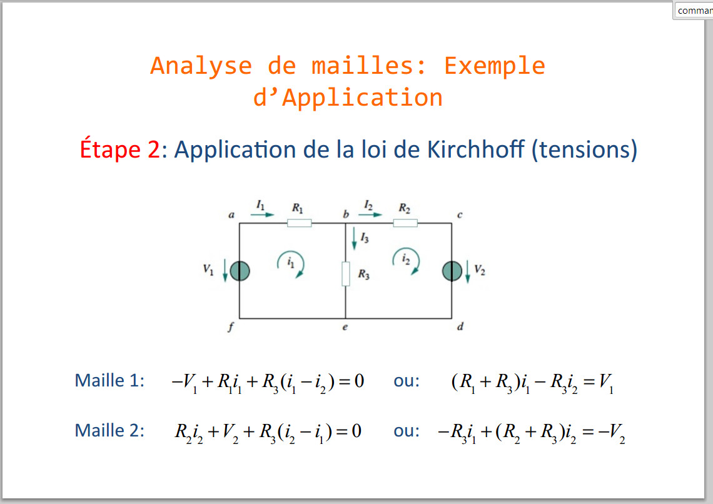

Mesh analysis
Mesh analysis is a method used to analyze electrical circuits, specifically those with multiple interconnected loops. The goal of mesh analysis is to determine the electric current flowing in each mesh (a loop or closed path in the circuit). It is an application of Kirchhoff's laws, particularly Kirchhoff's Voltage Law (KVL).
Here are the key steps involved in mesh analysis:
Identify Meshes:
Identify the meshes in the circuit. A mesh is a closed loop that does not contain any other loops within it.
Assign Mesh Currents:
For each mesh, assign a mesh current. A mesh current is an arbitrary direction of current flow within the loop. The direction is usually chosen arbitrarily, and the analysis will reveal the actual directions.
Apply Kirchhoff's Voltage Law (KVL):
Write KVL equations for each mesh. As you traverse the loop in the chosen direction, sum up the voltage drops across all the circuit elements (resistors, voltage sources, etc.). The sum of the voltage drops in a closed loop is equal to zero according to KVL.
Solve Simultaneous Equations:
The KVL equations for all the meshes form a system of simultaneous linear equations. Solve these equations to find the values of the mesh currents.
Calculate Other Quantities:
Once you have the mesh currents, you can use them to determine other quantities of interest, such as branch currents, voltages across components, and power.
Mesh analysis is particularly useful for circuits with multiple interconnected loops, and it simplifies the analysis by focusing on the currents in the individual loops. It provides a systematic approach to solving circuit problems and is often applied to circuits with resistors and independent voltage sources.
Keep in mind that in mesh analysis, you may encounter dependent sources or other non-linear elements that require additional considerations in the analysis process.

GO BACK